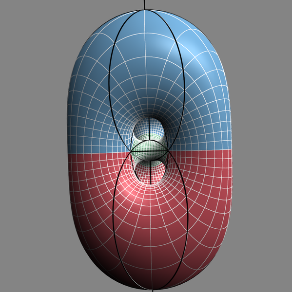
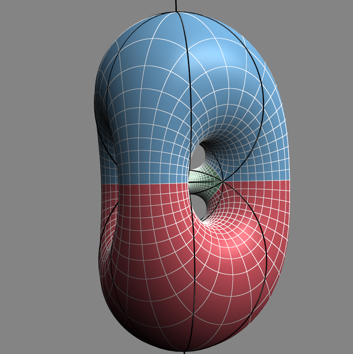
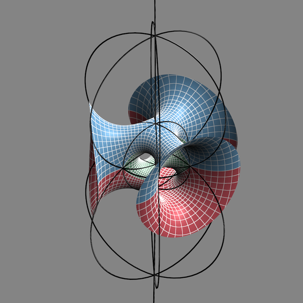
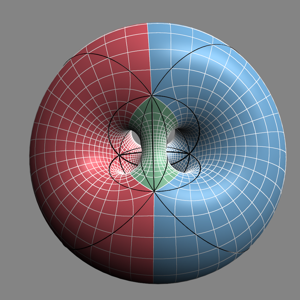
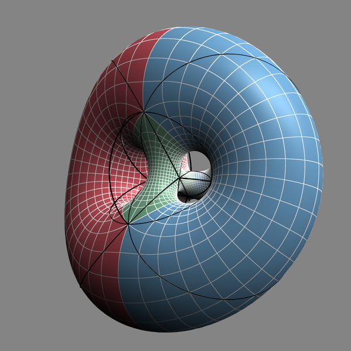
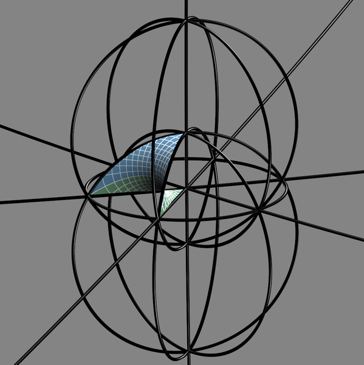
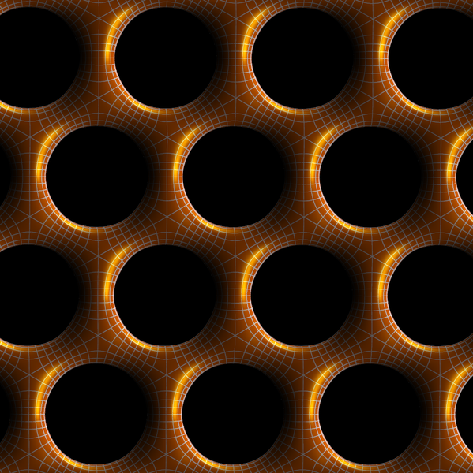
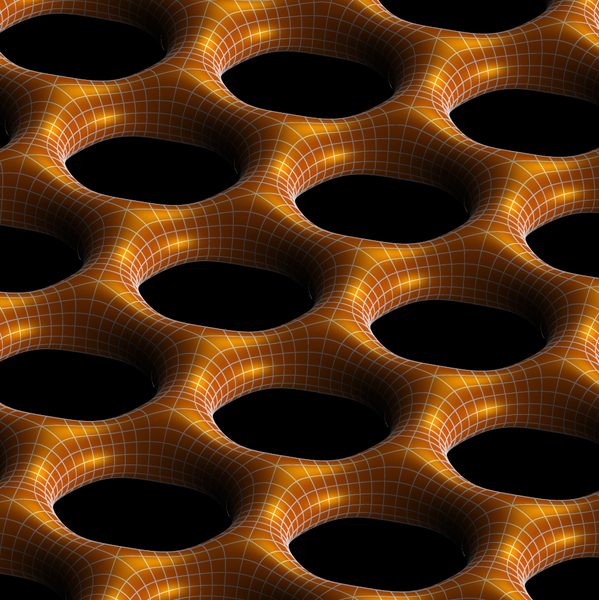

“Standard view” of the Lawson ξ2,2 minimal surface. An order 3 symmetry is apparent in this stereographic projection.

The surface is similar to the Lawson ξ2,1 surface of genus 2, but with a trinoid inserted at the center which connects the three vertical columns.

“Button view” of the Lawson ξ2,2 minimal surface, showing several order 2 symmetries.

The white lines on the surface are curvature lines, and the black lines divide the surface into 9 Plateau solutions.

Standard view, cut away by a geodesic 2-sphere.

One of the 9 isometric Plateau solutions which compose the surface. The Plateau solution is the minimal surface bounded by four edges of a geodesic tetrahedron which tiles S3. Since the Plateau solution is composed of 8 fundamental pieces, the order of the symmetry group of the surface is 72.

The conjugate cousin to the Lawson ξ2,2 surface.

The conjugate cousin is a doubly periodic constant mean curvature in R3.